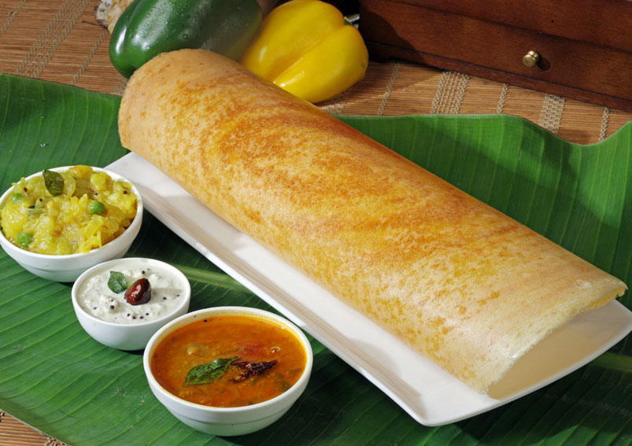
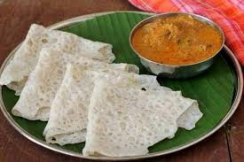
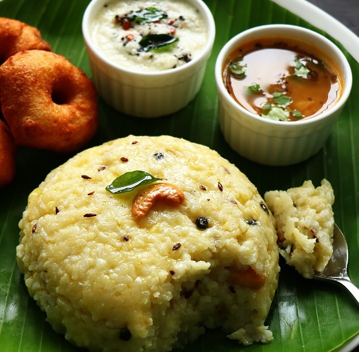

Masala Dosa - ₹120
Ingredients:
- Rice and Urad Dal
- Potato Masala
- Spices
- Coconut Chutney
- Sambar
Masala Dosa is a crispy South Indian crepe filled with flavorful spiced potato stuffing, served with chutney and sambar.

Bisi Bele Bath - ₹150
Ingredients:
- Rice
- Toor Dal
- Vegetables
- Tamarind
- Bisi Bele Bath Powder
Bisi Bele Bath is a traditional Karnataka dish made of rice, lentils, and a unique spice blend, served hot with ghee.

Neer Dosa - ₹100
Ingredients:
- Rice
- Salt
- Water
Neer Dosa is a light and lacy rice crepe from Karnataka, perfect with coconut chutney or a tangy curry.

Idli - ₹50
Ingredients:
- Rice
- Urad Dal
- Salt
Idli is a soft and fluffy steamed rice cake, a staple breakfast dish in Tamil Nadu.

Pongal - ₹80
Ingredients:
- Rice
- Moong Dal
- Black Pepper
- Cumin Seeds
- Curry Leaves
Pongal is a savory rice and lentil dish flavored with ghee and spices, commonly served during festivals.